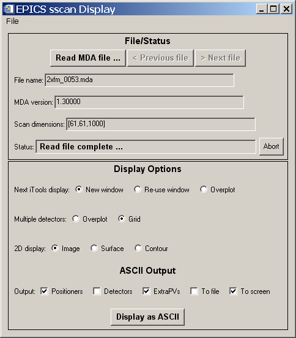
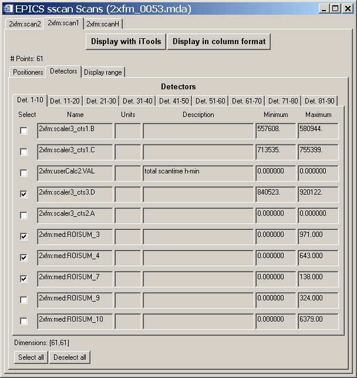
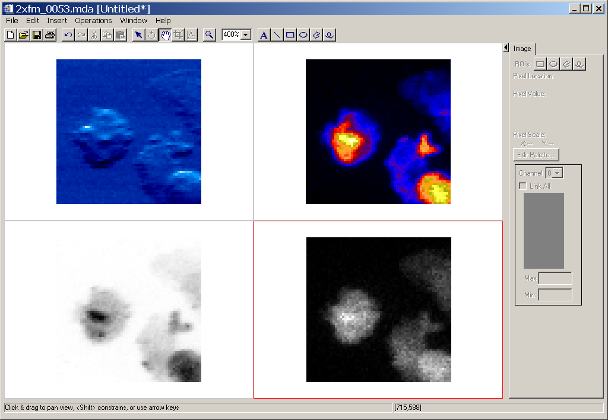
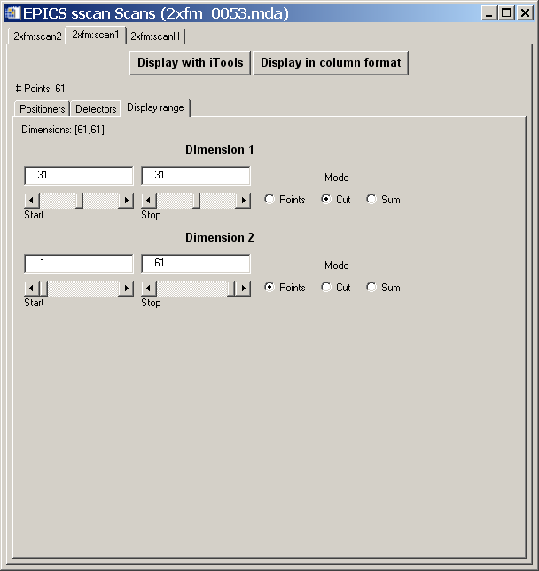
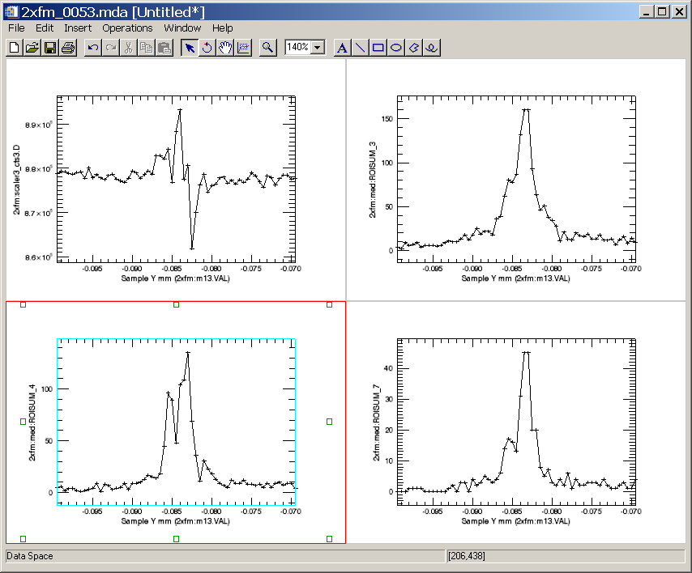
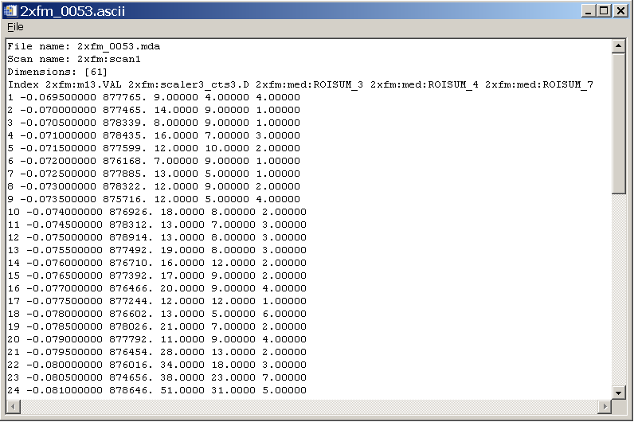
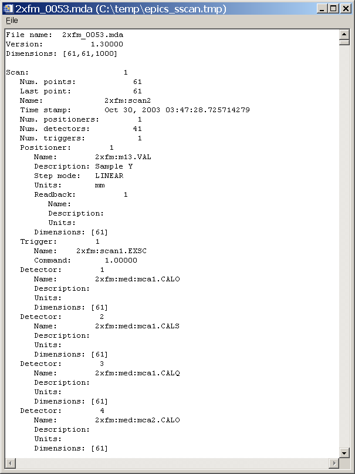

EPICS_SSCAN_DISPLAY
Introduction
GUI Windows
Known Problems
This document describes the EPICS_SSCAN_DISPLAY graphical user interface for reading and
displaying EPICS scan data from MDA files collected with the EPICS sscan record and saveData.
This class basically implements a GUI interface to the underlying
EPICS_SSCAN class. It displays data using the very
powerful IDL iTools graphical system, as well as in ASCII format. The iTools permit interactive
manipulation of the graphical display, and can be used to produce publication quality plots.
This package can be used instead of the older scanSee program for displaying MDA files. Because it uses IDL iTools,
rather than IDL direct graphics, it provides much more sophisticated graphics than scanSee, with much less code.
The EPICS_SSCAN_DISPLAY software is available in both source code form and as an IDL save file (mda_display.sav) in a
compressed tar file.
By using the mda_display.sav file the package can be run for free with the IDL Virtual Machine.
Note that the display routines require the iTools system in IDL, which is only available in
IDL 6.0 and newer releases. The current mda_display.sav file was built with IDL 6.3, and users should download
that version of the IDL Virtual Machine.
The top level window is show below. This window can be obtained with the following IDL command:
IDL> mda_display
When using the IDL Virtual Machine this display will appear when opening the file mda_display.sav.

Hopefully the GUI is quite self-explanatory. The "Read MDA file" button is used to select an MDA file
to read. If there are files with sequence numbers before and after the selected file in that directory,
then the "Previous file" and "Next file" buttons will be available. When an MDA file is read in, a new window
like the following is created, which contains all of the information about the scan.

This window makes extensive use of tabs to display a large amount of information in a reasonable
amount of screen real estate. The top level tab is used to select the scan in the MDA file. In the example
shown above there are 3 scans, 2xfm:scan2, 2xfm:scan1, and 2xfm:scanh. For each scan there are then 3 tabs
displayed: "Positioners", "Detectors", and "Display range". The detectors are displayed on multiple tabs,
each containing the information for 10 detectors. For each positioner and detector, descriptive information
(EPICS PV name, units, description, and minimum and maximum value) is displayed. Each positioner or detector
can be selected with a check box to be included in the display. Once the desired positioners and detectors are
selected the "Display with iTools" button can be used to produce an iTools display. In the example shown here,
this results in the following display.

This image was manipulated using the iTools display to increase the zoom to 400% for each image and to modify
the color tables.
The "Display range" tab can be used to limit the range of data displayed for each dimension in a scan. For example:

In the example shown above the first dimension was changed from "Points" to "Cut", and Start and Stop
for that dimension were changed from 1,61, to 31,31. This results in a 1-D data set. Pushing the
"Display with iTools" button after making this change results in the following display of column
31 for each of the 4 detectors.

For each dimension one can select the Start and Stop index to be displayed. The "Mode" for each dimension
can have the following values:
- "Points". The individual points between Start and Stop for this dimension are displayed.
- "Cut". Start and Stop are constrained to have the same value, and a "cut" through the data
set in this dimension is displayed.
- "Sum". The data is summed in this dimension, for the points between "Start and Stop".
In addition to displaying scan data with the iTools, it is possible to display the selected scan, positioners,
and detectors in ASCII with the "Display in column format" button. In this example this results in the following
display.

This window can be edited (to delete unwanted rows, for example), and saved to a file. It is a convenient
format for reading into other programs, such as spreadsheets.
On the main display window there are several Display Options.
- The "Next iTools" display option has 3 choices:
- "New window". The next iTools display will be in a new window.
- "Re-use window". The next iTools display will be in the current iTools window. It will
replace any graphics that are already displayed there.
- "Overplot". The next iTools display will add its data to the existing display.
- The "Multiple detectors" option has 2 choices:
- "Overplot". Multiple detectors will be plotted on the same display.
- "Grid". Multiple detectors will each be plotted in their own view in the same iTools window.
- The "2-D display" option has 3 choices:
- "Image". 2-D data will be displayed as images using the iImage tool
- "Surface". 2-D data will be displayed as a surface using the iSurface tool
- "Contour". 2-D data will be displayed as a contour plot using the iContour tool
On the main display window there are options for displaying the overall MDA file in ASCII. This display
is mainly intended to be humanly readable. The "Display in column format" button on the scan window
is better suited for producing output to be read by other programs.
- "Positioners". The positioner data will be displayed.
- "Detectors". The detector data will be displayed. Note that this can result in a very
large amount of output. The IDL "xdisplayfile" routine that is used to display the
output is limited to 10,000 lines of text, so the display may be truncated, though the
output file, if selected, will contain all of the data.
- "Extra PVs". The extra EPICS PVs that are stored in the scan file will be displayed.
- "To file". If this option is not selected the output is written to a temporary file.
If this option is selected the output is saved to file.ascii, where the "file" is the
part of the scan file name before .mda*.
- "To screen". The output is displayed with IDL's "xdisplayfile" routine after being written
to a file.
The output when pressing "Display as ASCII" button is as follows.

- The "Abort" button on the main display is currently not implemented. In the future it may
be used to abort reading large files or creating complex displays with iTools.
- There are no titles in the iTools displays to indicate the file name or detector description.
This is because there seems to be no simple way to add such information from the iTools procedure
calls. The information can easily be added manually later, but it would be very nice to be able to
add it automatically.
- The iImage command makes a bad assumption about data coordinates. It assumes that the X and Y
dimensions of an image are in the same units. This is sometimes true (for instance and X/Y scan
where both motors are in mm), but is not necessarily true. iImage adjusts the pixel dimensions so they
are the same size in data units in the X and Y directions. This results in unusable images (i.e. a thin line)
if the data dimensions are very different. The fix is that the user dimensions (i.e. mm or keV, etc.)
are not passed to iImage by EPICS_SSCAN_DISPLAY if they differ by more than a factor of 4 in user units per pixel.
This results in a
useable image, but without the ability to add meaningful axes or have the mouse position be
displayed in user units.
- Having the next iTools display overplot on the existing plot, either for additional detectors or for another
scan, works fine when there is a single view in the iTools window. However, it does not work correctly
if the iTools window is displaying a grid with more than one view. This should be fixed in a future release.
- Only 1-D and 2-D data can be displayed. 3-D or 4-D scans can only be displayed by using "Cut" to reduce
the dimensions to 1-D or 2-D. In the future the iVolume routine will be used to display 3-D data.
Suggestions and Comments to:
Mark Rivers : (rivers@cars.uchicago.edu)
Last modified: October 17, 2006